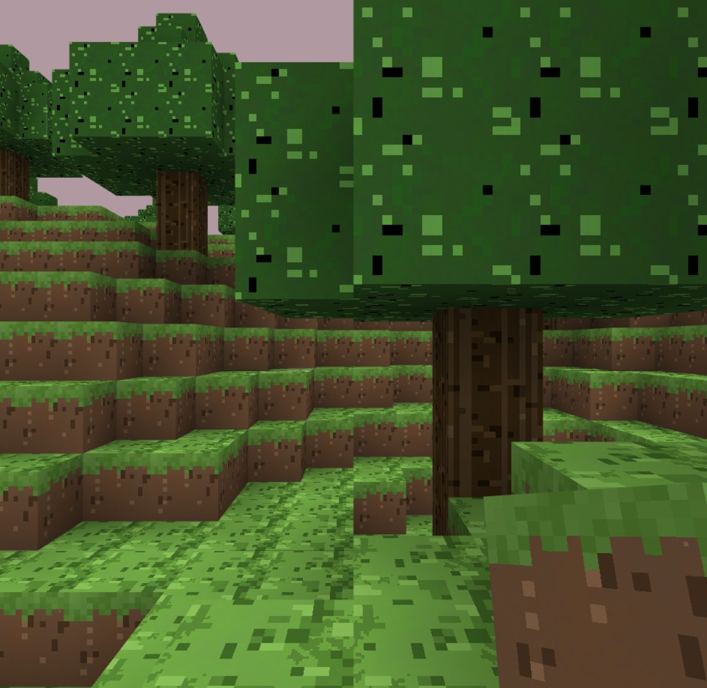
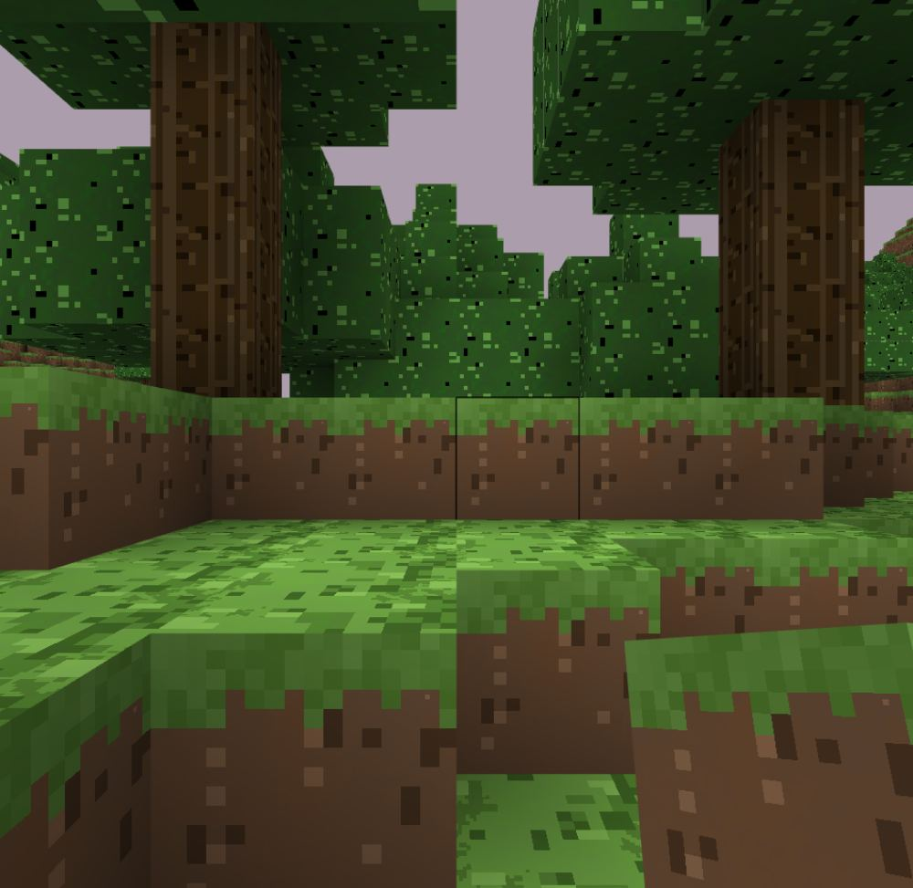

An original voxel sandbox. Dig a world that generates itself, wire a base that runs without you, then go through the Nether and finish it against the dragon.

Everything below is in the build you can download today. Nothing here is a plan.
The world is a pure function of its seed, so every player generates the same landscape independently. Only the blocks you actually change travel over the network — which is why multiplayer works on a home connection.
Tools and armour across four tiers, a crafting grid with a recipe book, hunger that gates healing, and mobs that come out after dark. Sleep in a bed to skip the night and move where you respawn.
Light a portal, collect blaze rods and ender pearls, combine them into eyes of ender, and open the way to the End. There is a dragon at the other side and a real credit roll after it.
A skateboard, car, truck, boat, plane and helicopter, each with its own handling. The boat floats properly, so water stops being a wall.
The built-in art is generated from code — the game ships with no image files at all. Drop in any Minecraft-style resource pack and it loads at its own resolution, up to 128 px.
The Windows build is the full version and runs offline. The browser build plays the same game at a shorter view distance, with touch controls on a phone.
A sandbox hands you a world and no instructions, and the good parts stay invisible until something points at them. These nineteen do the pointing — each one names the next thing to try rather than congratulating you for the last. Press L in game to see how far along you are.
The automation layer, and the part that is genuinely ours rather than borrowed. Energy here has pressure, and pressure is spatial.
A generator pushes NoVolt into a conduit run. Every block of conduit bleeds 3 nV away, and every machine drawing on the network pulls it down further. So a generator on the far side of your base really does power a machine worse than one standing next to it — layout is a decision, not decoration.
And it degrades instead of tripping. One machine too many does not black the base out; everything slows down, which tells you what is happening while you can still fix it. Boosters buy pressure back over distance. Solar panels and water wheels run without fuel, batteries carry the night, and rain halves what the panels manage.
| Machine | Needs | |
|---|---|---|
| Stone generator | Cobblestone from nothing | 25 nV |
| Sawmill | Six planks a log, against four | 30 nV |
| Miner | Digs a shaft to bedrock | 30 nV |
| Electric furnace | Smelts with no fuel | 35 nV |
| Compressor | Nine of a thing into its block | 35 nV |
| Crusher | Doubles your ore | 50 nV |
| Quarry | Clears nine columns at once | 60 nV |
Live, on the same formulae the game runs:
pressure = source − distance×3 − draw×0.5
Captured from the current build, not mock-ups.

Mouse and keyboard on the desktop and in a browser. On a phone the left half of the screen is a thumbstick that appears wherever your thumb lands, and the right half looks around.
No. It is an original game in the same genre, and it borrows that genre’s vocabulary — blocks, a crafting grid, a Nether, a dragon at the end — the way any voxel sandbox does. None of Minecraft’s code or artwork is in it. The terrain generator, the renderer, the physics and every built-in texture were written from scratch.
It is not affiliated with Mojang or Microsoft, and it is free.
That warning means the installer is not code-signed, not that anything is wrong with it. A signing certificate costs a few hundred a year, which this project does not have. SmartScreen shows the same notice for every unsigned installer on the internet.
If you would rather not take a stranger’s word for it: the whole source is on GitHub, the installer is built by a public GitHub Actions run you can read, and the browser version needs no install at all.
Same game, same worlds. The desktop build renders further, holds more chunks in memory and runs with no network at all. The browser build trades view distance for starting instantly, and picks up touch controls on a phone.
Windows 10 or 11, 64-bit, and a GPU that does WebGL2 — which in practice means anything made in the last decade. The installer is about 1.3 MB because the desktop build uses the WebView already on your system rather than shipping a browser inside itself.
There is no macOS or Linux build yet. Both would play in a browser today.
Yes. Terrain is a pure function of its seed, so every player generates the same world independently and only the blocks someone actually changed cross the network. That is little enough traffic to host a game from a home connection.
Drop in any Minecraft-style resource pack and it loads at its own resolution, up to 128 px. Packs stay on your machine and are never uploaded anywhere — they are their authors’ work, so please respect the licence each one ships with.
Nothing is required, though. With no pack at all the game draws every texture itself at startup.
The build contains no .png art for the world. Every block and item
texture is generated in code when the game starts — noise, posterised into
a few flat tones, then shaded. That is why the download is measured in megabytes
rather than hundreds of them, and why changing a texture means editing a function
instead of opening an image editor.
The Windows build is the full version: longer view distance, the whole launcher, and it runs with no network at all.
The installer is unsigned, so Windows SmartScreen will warn the first time you run it — choose More info then Run anyway. Code signing costs money this project does not have.